library(dartRverse)
library(ggplot2)
library(tidyr)7 Simulations for Conservation
Session Presenters
Required packages
Introduction
In this session we will learn howto run simulations within the dartRverse. Please be aware dartRverse is not a fully fledged simulation tool. It allows to do quick and easy simulations, but for a comprehensive simulation framework you should consider using SLIM. By the way there is a cool package called ‘slimR’ which allows to integrate and run simulations from within R (and it talk to the dartRverse for analysis).
Tip
…they may take time… Also often simulation take some time and if you run lots of them (to explore a vast parameter space) you may need to parallelise your run, have a good amount of storage and also computing power available. Often you develop a simulation locally, but then might need to transfer it to a cluster or HPC system to run it.
A first simulation
The dartRverse allows to run time forward simulations. Often you want to run some simulation based on an existing genlight object.
We load some example data
rfbe <- readRDS("./data/rfbe.rds")
gl.report.basics(rfbe)Starting gl.report.basics
SUMMARY STATISTICS
Datatype: SNP
Loci: 9849
Individuals: 383
Populations: 16
Average Read Depth: 28.70085
Values: 3772167
0 1 2 NA
percent 65.5 22.0 11.2 1.3
Monomorphic Loci: 2
Loci all NA: 0
Individuals all NA: 0
Sample Sizes:
BHA_A2 E504 E508 E509 E518 NW30 NW70
19 19 20 20 20 20 20
NW72 NW80 PJTub1.2.3 PJTub4.5 PJTub6 SE60 SW10
10 10 64 51 33 20 19
SW20 SW60
18 20
Loci all NA across individuals by Population
BHA_A2 E504 E508 E509 E518 NW30 NW70 NW72 NW80 PJTub1.2.3 PJTub4.5 PJTub6 SE60
0 0 0 0 0 0 0 0 0 0 0 0 0
SW10 SW20 SW60
0 0 0
Individuals all NA across loci by Population
BHA_A2 E504 E508 E509 E518 NW30 NW70 NW72 NW80 PJTub1.2.3 PJTub4.5 PJTub6 SE60
0 0 0 0 0 0 0 0 0 0 0 0 0
SW10 SW20 SW60
0 0 0
Completed: gl.report.basics Lets come up with a scenario.
Scenario
We want to study how expected heterozygosity over time will change if I transfer 10 individuals from population PJTub1.2.3 to a new population. We want to simulate this new population for 20 generations and we want to repeat the simulation 10 times to get a good estimate of the expected heterozygosity.
source <- gl.keep.pop(rfbe, pop.list="PJTub1.2.3")Starting gl.keep.pop
Processing genlight object with SNP data
Checking for presence of nominated populations
Retaining only populations PJTub1.2.3
Warning: Resultant dataset may contain monomorphic loci
Locus metrics not recalculated
Completed: gl.keep.pop nInd(source)[1] 64source ********************
*** DARTR OBJECT ***
********************
** 64 genotypes, 9,849 SNPs , size: 14.3 Mb
missing data: 8161 (=1.29 %) scored as NA
** Genetic data
@gen: list of 64 SNPbin
@ploidy: ploidy of each individual (range: 2-2)
** Additional data
@ind.names: 64 individual labels
@loc.names: 9849 locus labels
@loc.all: 9849 allele labels
@position: integer storing positions of the SNPs [within 69 base sequence]
@pop: population of each individual (group size range: 64-64)
@other: a list containing: loc.metrics, ind.metrics, loc.metrics.flags, verbose, history
@other$ind.metrics: id, pop
@other$loc.metrics: AlleleID, CloneID, AlleleSequence, TrimmedSequence, Chrom_Scaturiginichthys_vermeilipinnis2, ChromPosTag_Scaturiginichthys_vermeilipinnis2, ChromPosSnp_Scaturiginichthys_vermeilipinnis2, AlnCnt_Scaturiginichthys_vermeilipinnis2, AlnEvalue_Scaturiginichthys_vermeilipinnis2, Strand_Scaturiginichthys_vermeilipinnis2, SNP, SnpPosition, CallRate, OneRatioRef, OneRatioSnp, FreqHomRef, FreqHomSnp, FreqHets, PICRef, PICSnp, AvgPIC, AvgCountRef, AvgCountSnp, RepAvg, clone, uid, rdepth, monomorphs, maf, OneRatio, PIC
@other$latlon[g]: no coordinates attachedAs you can see (low amount of missing data) the data set is prefiltered for quality SNPs, but in simulations we often do not want any missing data (they are a pain, as for example it could happen just by chance that a loci would only have missing data if a subsample is drawn randomly. Hence we wan to get rid of all missing data. There are two options (remove or impute). We go for the remove version, but depending on the amount of missing data impute would work fine as well here. Also the decision is most likely influenced by your question. Would a random imputation bias your results towards a certain outcome?
#remove all missing data
source2 <- gl.filter.callrate(source, method="loc", threshold=1)Starting gl.filter.callrate
Processing genlight object with SNP data
Warning: Data may include monomorphic loci in call rate
calculations for filtering
Recalculating Call Rate
Removing loci based on Call Rate, threshold = 1 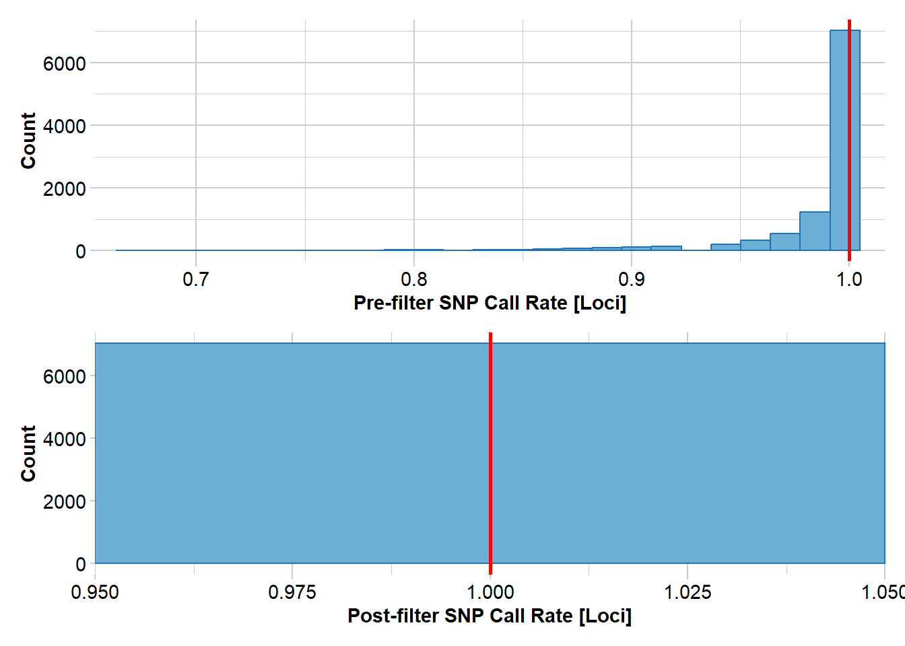
Completed: gl.filter.callrate #impute
#source2 <- gl.impute(source, method="random")next we transfer 10 individuals assuming the source population allelele frequencies
#create a new genlight object based on allele frequencies from source2
transfer <- gl.subsample.ind(source2, n=10, replace = FALSE, verbose = 0)
res<- mean(gl.He(transfer)) #mean heterozygosity
res[1] 0.2247581We have a starting heterosygosity of he[1]: 0.2247581 The next step is then repeat this for 20 generations (assuming an ideal poulation for simplicity)
for (gen in 2:21)
{
#cloning snails
transfer <- gl.sim.offspring(transfer, transfer, noffpermother = 1)
res[gen] <- mean(gl.He(transfer))
}
plot(res, type="b", xlab="Generation", ylab="Expected heterozygosity",
main="Simulation of expected heterozygosity over time")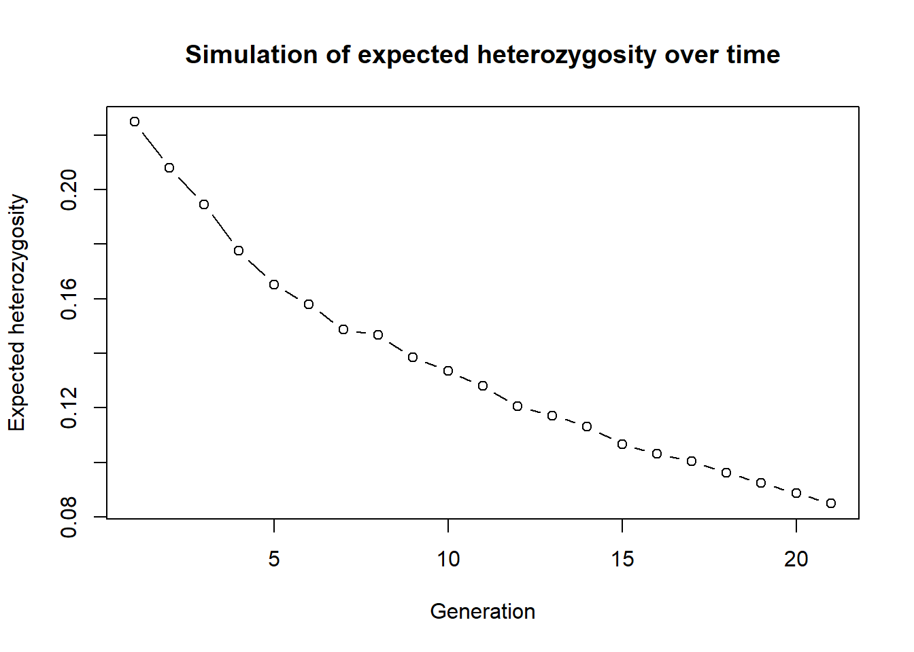
As we can see expected heterozygosity is decreasiong over time.
This is a very simple simulation, but it shows the basic idea. You can also use the gl.sim.offspring function to simulate more complex scenarios, such as different mating systems and check the effect.
This was only one instance so we can repeat this simulation 10 times to get a better estimate of the expected heterozygosity over time. To do so we create a function around the whole simulation (which makes life easier for repeats).
simHe <- function(x, nInd=10, ngens=20)
{
#remove all missing data
#create a new genlight object based on allele frequencies from source2
transfer <- gl.subsample.ind(x, n=nInd, replace = FALSE, verbose = 0)
res <- mean(gl.He(transfer)) #mean heterozygosity
for (gen in 2:ngens)
{
#cloning snails
transfer <- gl.sim.offspring(transfer, transfer, noffpermother = 1)
res[gen] <- mean(gl.He(transfer))
}
return(res)
}
#test the function
out <- simHe(source2, nInd = 30, ngens = 20)
plot(out, type="b", xlab="Generation", ylab="Expected heterozygosity",
main="Simulation of expected heterozygosity over time")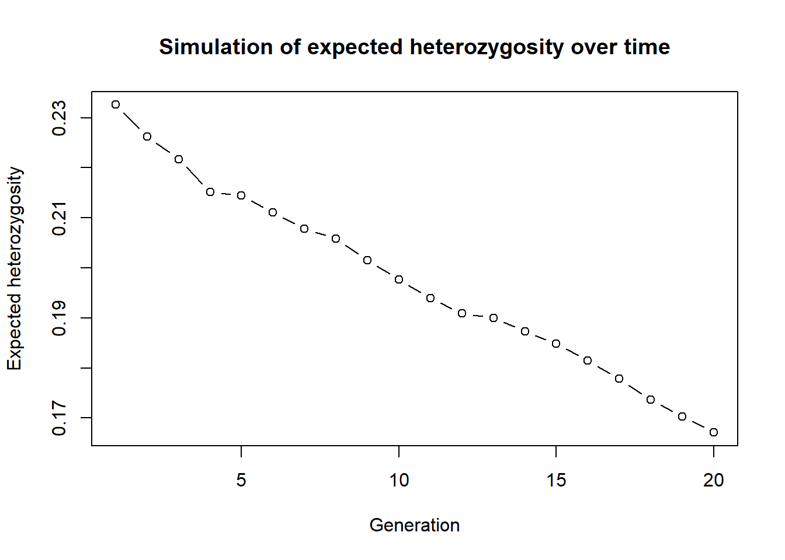
Now we can run this simulation 10 times and plot the results.
nreps <- 10
out <- lapply(1:nreps, function(x) simHe(source2, nInd = 10, ngens = 20))out is now a list of 10 vectors with the expected heterozygosity over time. We can plot the results using a matrix plot. We need to combine this list into a matrix first.
outmat <- data.frame(do.call(cbind, out))
matplot(outmat, type="b", xlab="Generation", ylab="Expected heterozygosity",
main="Simulation of expected heterozygosity over time", col=1:nreps, pch=1:nreps)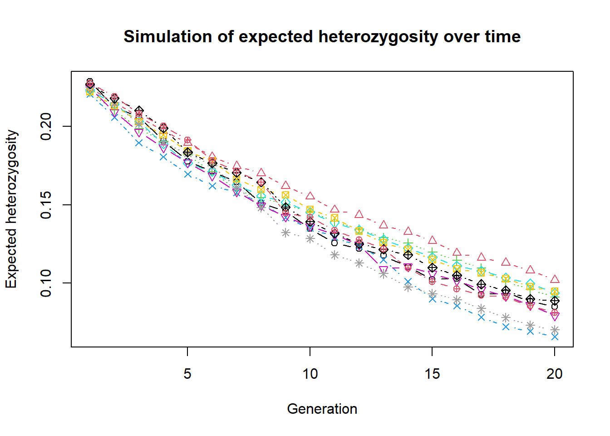
Or a ggplot version using boxplots over time.
library(ggplot2)
outmat2 <- pivot_longer(outmat, cols=everything(), names_to="replicate", values_to="He")
outmat2$generation <- rep(1:20, each=nreps)
ggplot(outmat2, aes(x=generation, y=He, group=generation)) +
geom_boxplot() +
labs(x="Generation", y="Expected heterozygosity",
title="Simulation of expected heterozygosity over time") +
theme_minimal() +
scale_x_continuous(breaks=1:20)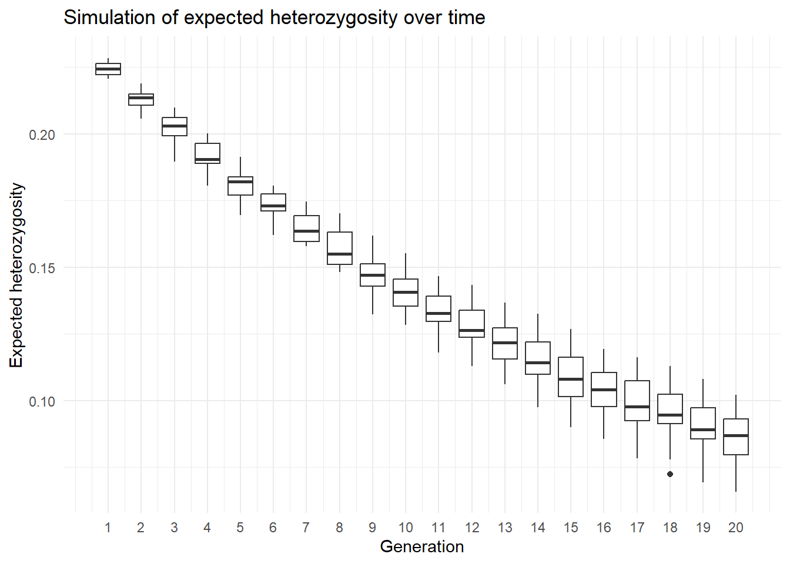
Exercise
 Create a simulation of expected heterozygosity over time for the source population PJTub1.2.3, but this time transfer only 5 individuals and run the simulation for 50 generations. Repeat the simulation 5 times and plot the results using a boxplot. Or find another scenario you want to simulate. You can also change the
Create a simulation of expected heterozygosity over time for the source population PJTub1.2.3, but this time transfer only 5 individuals and run the simulation for 50 generations. Repeat the simulation 5 times and plot the results using a boxplot. Or find another scenario you want to simulate. You can also change the gl.sim.offspring function to simulate more complex scenarios, such as different mating systems and check the effect.
Starting conditions
There are two more functions that can be used to create populations.
gl.sim.ind: create a population of individuals based on the current allele frequency of a darR/genlight object. For example it is a good starting point if you have a well sampled population (allele frequencies are representative) and want to create starting populations that are larger. Repeated gl.sim.ind over generations can simulate drift only (no effect of mating etc.)gl.sim.Neconst: creates a population of individuals based on a constant effective population size (Ne) and a given mutation rate. An example is used in session 2. Be aware it creates only allele frequencies correctly, but loci are not in hardy weinberg equilibrium. hence often you want to create a certain size and then create offspring from this population to get a realistic population structure.
gl.sim.ind
#use only 1000 loci (due ot speed)
glsim1 <- gl.sim.ind(source2[,1:1000], n = 100)
gl.smearplot(glsim1) Processing genlight object with SNP data
Starting gl.smearplot 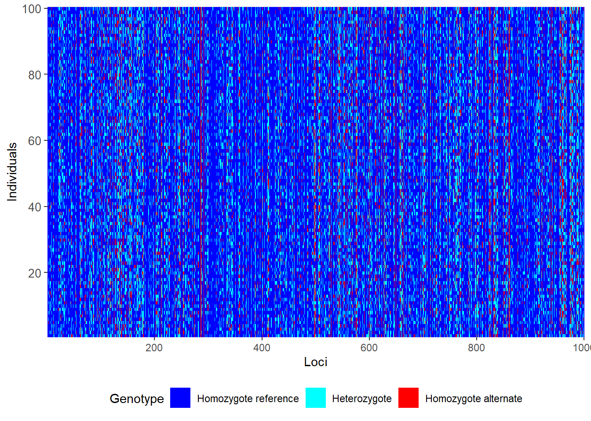
Completed: gl.smearplot To demonstrate gl.sim.ind we can think about a scenario of a population of 20 individuals that is split in half and we want to check how fst changes in an ideal population. Theory says that Fst should increase over time and reach 1 finally. We can simulate this by creating two populations of 10 individuals and then create individuals for 20 generations with no exchange.
glsim1 <- gl.sim.ind(source2, n = 10, popname = "pop1")
glsim2 <- gl.sim.ind(source2, n = 10, popname = "pop2")
fst <- NA
for (i in 1:20) {
glsim1 <- gl.sim.ind(glsim1, n=10, popname = "pop1")
glsim2 <- gl.sim.ind(glsim2, n=10, popname = "pop2")
gg <- rbind(glsim1, glsim2)
fst[i] <- gl.fst.pop(gg, verbose = 0)[2,1]
}
plot(fst, type="b", xlab="Generation", ylab="Fst",
main="Simulation of Fst over time")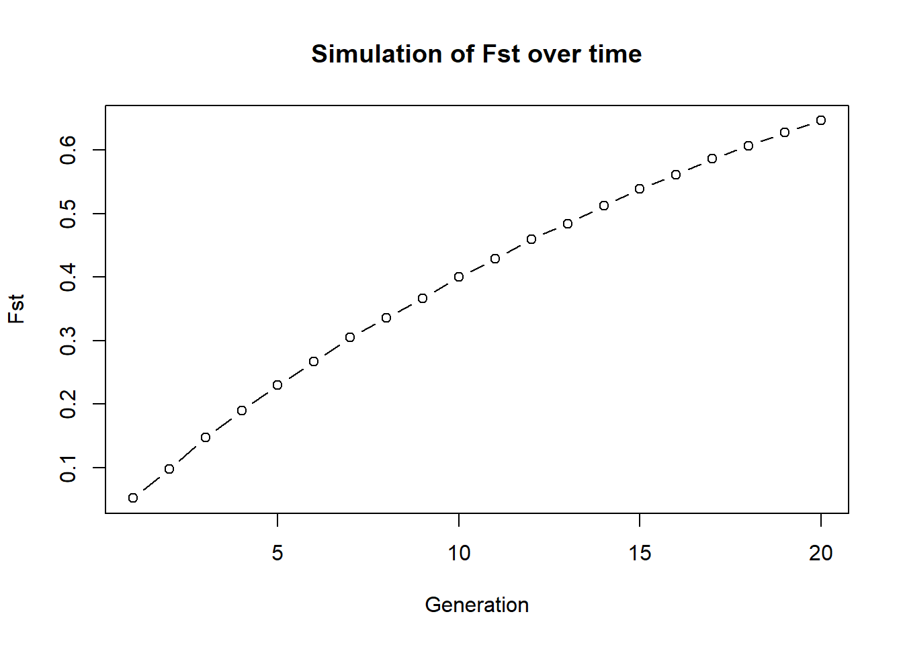
Exercise
 Can you modify this example and exchange individuals between the two population and see how affects this Fst.
Can you modify this example and exchange individuals between the two population and see how affects this Fst.
Birth and death
To create birth and death and a realistic mating system, so we have the Canberra Grassland Earless Dragon as an example. As we want to do something geneticy, we use hte following parameter
We start with a population of 100 individuals, 1000 loci (even sex ratio)
yearly survival is 0.8
yearly reproduction is up to 3 individuals per female (even distribution)
K (carrying capacity is 100)
run 30 generations
How many alleles are lost after 30 generations and how does this depend on population size?
Let us start this time with a function:
simalllos <- function(x, ngens=30, nind=100, nloc=1000, surv=0.8, repro=3, K=100)
{
#create a population of individuals
dummy <- gl.sim.ind(x, n = nind, popname = "pop1")
dummy <- dummy[,1:nloc]
#allocate sex
pop(dummy) <- sample(c("M","F"), nInd(dummy),replace = TRUE)
for (gen in 1:ngens)
{
#offsprings
offsprings <- gl.sim.offspring(fathers = dummy[pop="M"], mothers = dummy[pop="F"],
noffpermother = repro)
pop(offsprings) <- sample(c("M","F"), nInd(offsprings),replace = TRUE)
#death of adults
survival <- rbinom(nInd(dummy), size = 1, prob = surv) #survival
dummy <- dummy[survival == 1, ] #keep only survivors
#combine population
dummy <- rbind(dummy, offsprings)
#check population size > K
if (nInd(dummy) > K) {
#randomly remove individuals to keep population size at K
remove <- sample(1:nInd(dummy), nInd(dummy) - K, replace = FALSE)
dummy <- dummy[-remove, ]
}
#check alleles lost
}
alleleslost <- sum(colMeans(as.matrix(dummy)) %% 2 ==0)
return(alleleslost)
}
#test
start <- gl.filter.monomorphs(source2)Starting gl.filter.monomorphs
Processing genlight object with SNP data
Identifying monomorphic loci
Removing monomorphic loci and loci with all missing
data
Completed: gl.filter.monomorphs out <- simalllos(start, ngens=30, nind=20, nloc=1000, surv=0.8, repro=3, K=100)
out[1] 260We now have a cool function and can run a comprehensive simulation, checking various parameters on number of alleles lost. Be aware the first sample size also removes alleles (when we create the gl.sim.ind population)
paras <- expand.grid(ngens=1:10, ninds=20, nlocs=1000, surv=c(0.5, 0.8, 0.9), repro=3, K=50)
res <- sapply(1:nrow(paras), function(i) {
simalllos(start, ngens=paras$ngens[i], nind=paras$ninds[i], nloc=paras$nlocs[i],
surv=paras$surv[i], repro=paras$repro[i], K=paras$K[i])
})
paras$alleleslost <- res
ggplot(paras, aes(x=ngens, y=alleleslost, color=factor(ninds), group=factor(ninds))) +
geom_line() +
labs(x="Generations", y="Alleles lost", color="Population size") +
scale_color_brewer(palette="Set1") +
facet_wrap(~surv)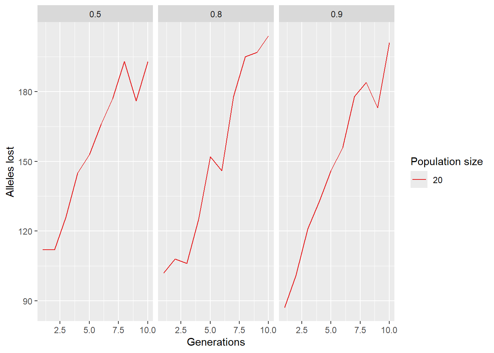
SNP panel over time…
We learned to select a SNP panel, but how good does it behave over time?
Subselect some population from our red fin blue eye data set and create a SNP panel. We will then simulate the future of this population and check how well the SNP panel performs over time. We use He as a parameter to check the performance of the SNP panel. And the SNP panel is based on “pic” selection of SNPs (=fast way to select a SNP panel).
table(pop(rfbe))
BHA_A2 E504 E508 E509 E518 NW30 NW70
19 19 20 20 20 20 20
NW72 NW80 PJTub1.2.3 PJTub4.5 PJTub6 SE60 SW10
10 10 64 51 33 20 19
SW20 SW60
18 20 #lets keep the first 9 populations
pops <- popNames(rfbe)[1:9]
rfbe2 <- gl.keep.pop(rfbe, pop.list=pops, verbose = 0)
#and impute missing data
rfbe3 <- gl.impute(rfbe2,method="neighbour" )Starting gl.impute
Processing genlight object with SNP data
Imputation based on drawing from the nearest neighbour
Warning: Population NW80 has 11 loci with all missing values.Found more than one class "dist" in cache; using the first, from namespace 'BiocGenerics'Also defined by 'spam'Found more than one class "dist" in cache; using the first, from namespace 'BiocGenerics'Also defined by 'spam' Residual missing values were filled randomly drawing from the global allele profiles by locus
Completed: gl.impute panel <- gl.select.panel(rfbe3, method="pic", nl=50, verbose = 0)
res <- gl.check.panel(panel, rfbe3, parameter="Fst")`geom_smooth()` using formula = 'y ~ x'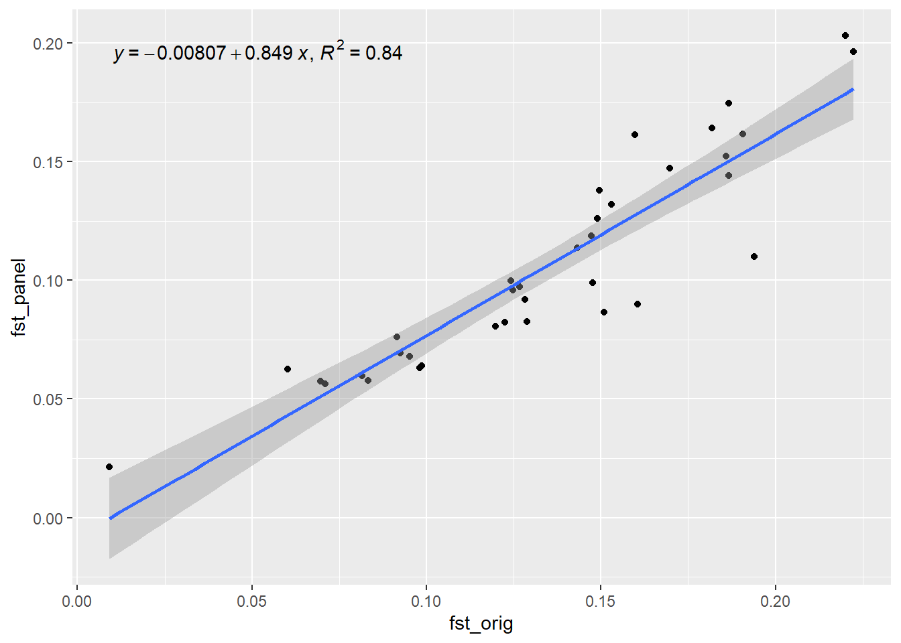
out <- summary(lm(res[,1] ~ res[,2]))$r.squared
out[1] 0.8407802Now lets simulate the future of this population and check how well the SNP panel performs over time. We will use the gl.sim.offspring function to simulate offspring and then check Fst (He) over time.
xx <- rfbe3
xx <- xx[order(pop(xx)),]
for ( i in 2:10) {
pops <- seppop(xx)
#panmictiv pops, but completely seperated
pops <- lapply(pops, function(yy) {
dummy <- gl.sim.offspring(yy,yy, noffpermother = 3)
dummy <- gl.sample(dummy, nInd(yy), replace = FALSE, verbose = 0)
})
pops <- do.call(rbind, pops)
pop(pops)<- pop(xx)
res <- gl.check.panel(x =panel, pops, parameter="Fst")
out[i] <- summary(lm(res[,1] ~ res[,2]))$r.squared
xx<- pops
cat(paste("Generation", i, "R-squared:", out[i], "\n"))
flush.console()
}`geom_smooth()` using formula = 'y ~ x'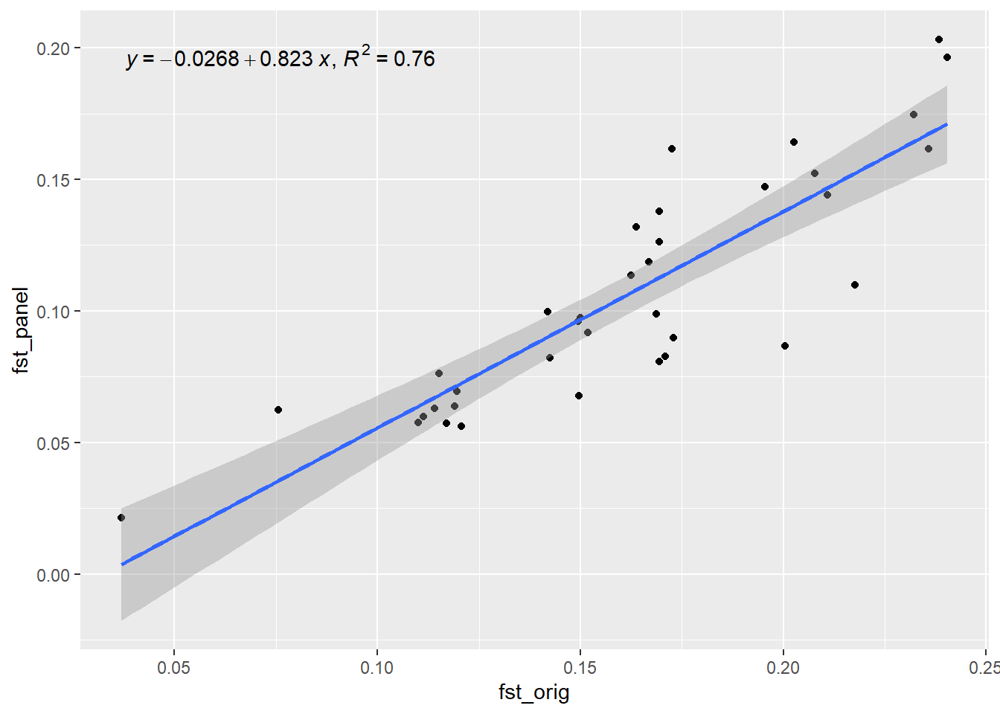
Generation 2 R-squared: 0.759853833717633 `geom_smooth()` using formula = 'y ~ x'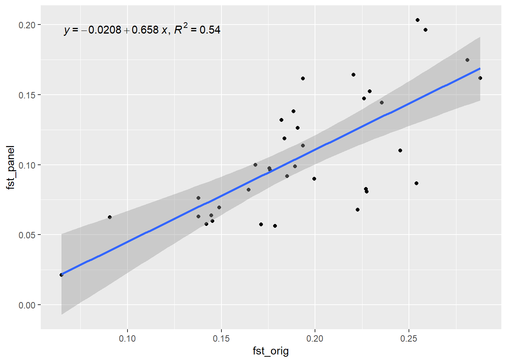
Generation 3 R-squared: 0.539566062958218 `geom_smooth()` using formula = 'y ~ x'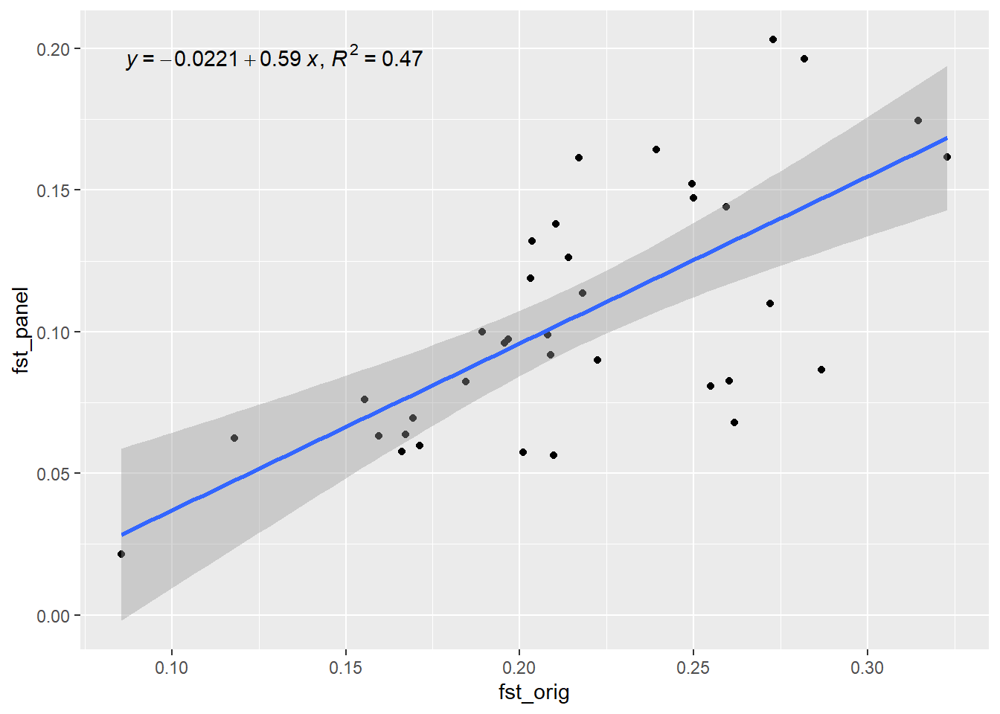
Generation 4 R-squared: 0.474825308323337 `geom_smooth()` using formula = 'y ~ x'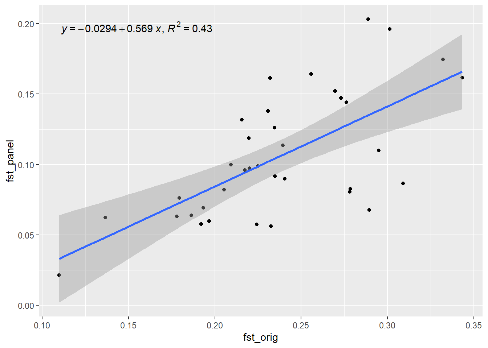
Generation 5 R-squared: 0.433089579421944 `geom_smooth()` using formula = 'y ~ x'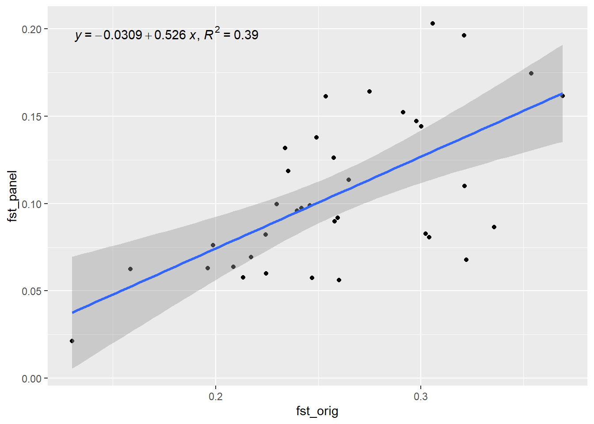
Generation 6 R-squared: 0.388461070679624 `geom_smooth()` using formula = 'y ~ x'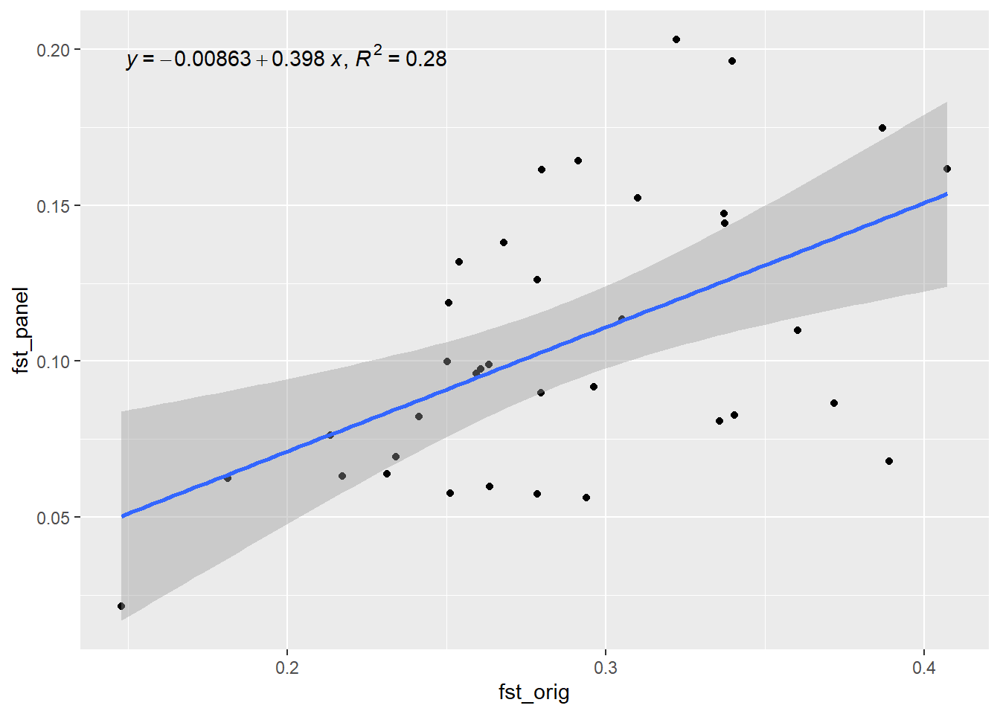
Generation 7 R-squared: 0.279210111909157 `geom_smooth()` using formula = 'y ~ x'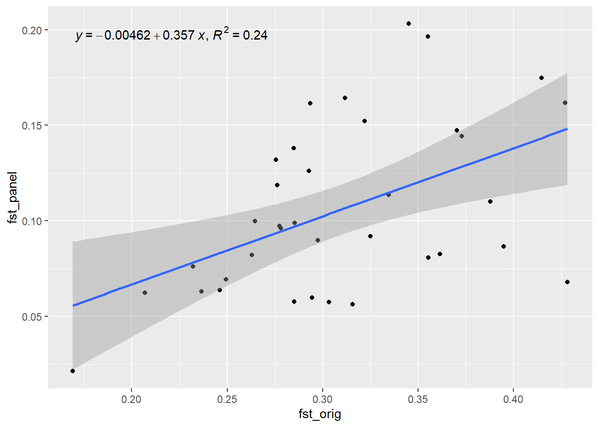
Generation 8 R-squared: 0.242591869025034 `geom_smooth()` using formula = 'y ~ x'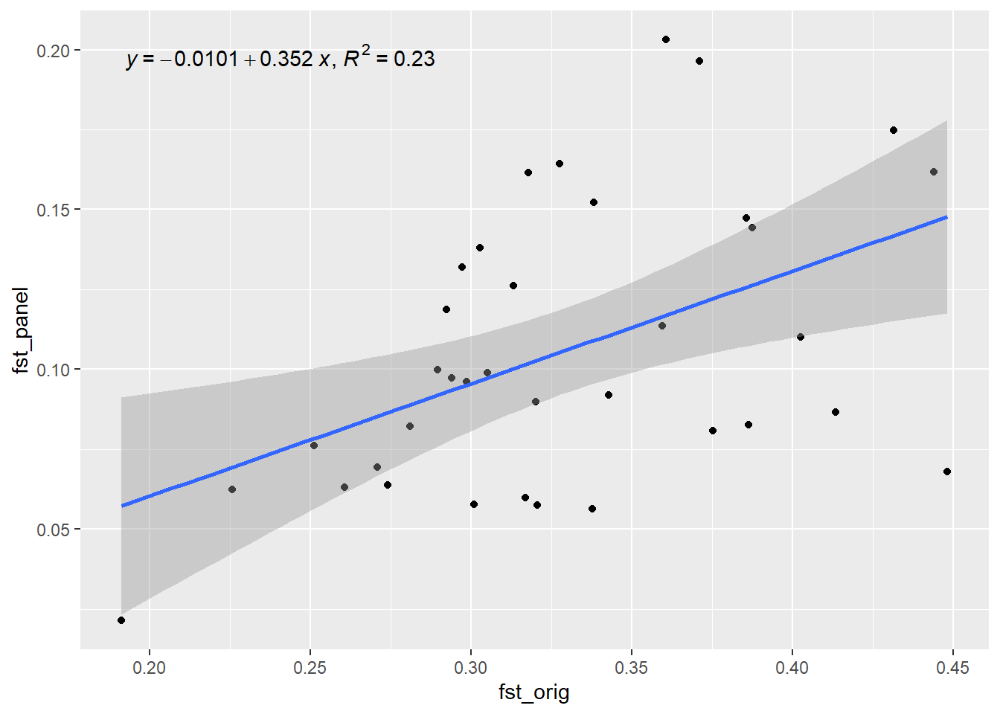
Generation 9 R-squared: 0.227123939076829 `geom_smooth()` using formula = 'y ~ x'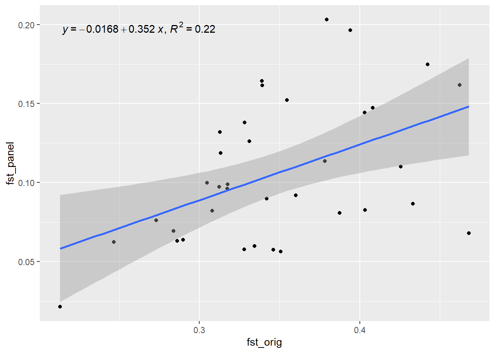
Generation 10 R-squared: 0.220908824826448 plot(out, type="b", xlab="Generation", ylab="R-squared",
main="Performance of SNP panel over time")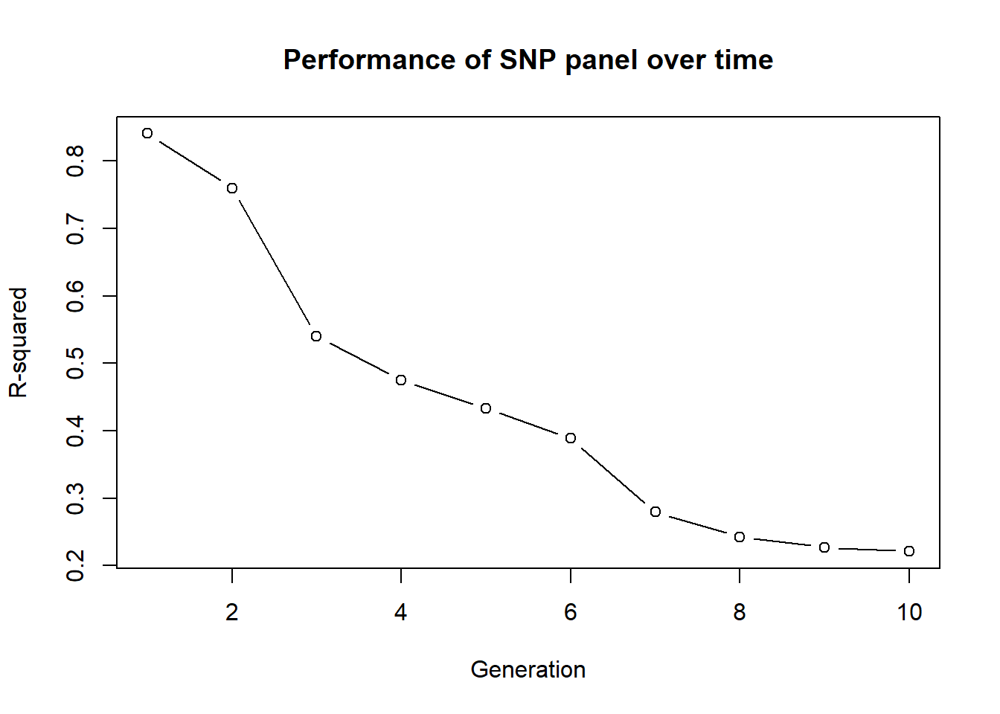
And done!!!
Further Study
Lots to come later ;-)